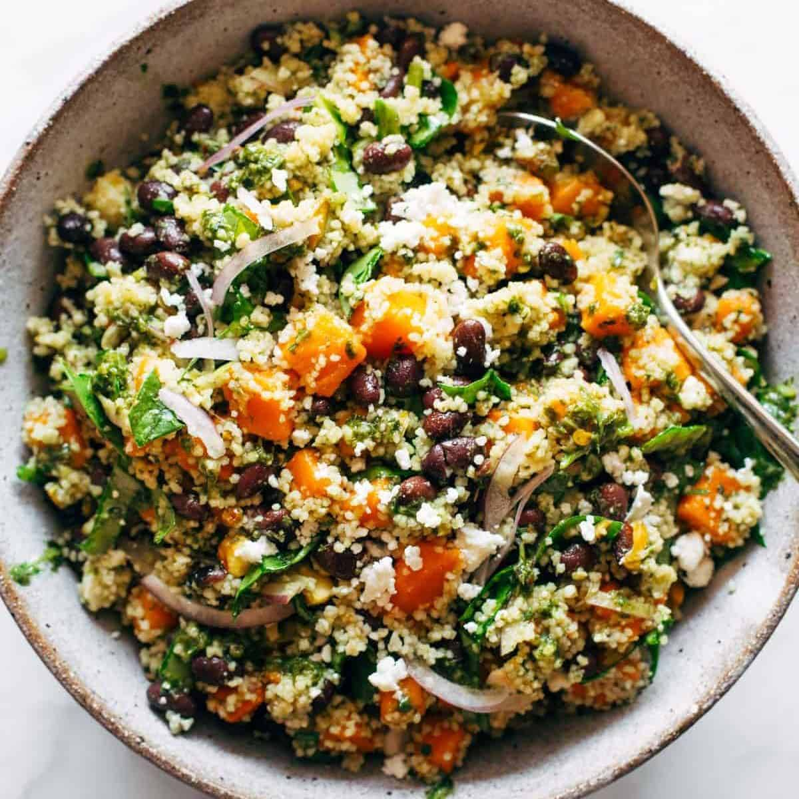

Home
Black Bean and Couscous Salad

Description
This couscous salad recipe is great for a buffet, with interesting textures and Southwest flavors combined
into one delicious dish.
Leftovers store well refrigerated for several days.
Ingredients
- 1 ¼ cups chicken broth
- 1 cup uncooked couscous
- 3 tablespoons extra virgin olive oil
- 2 tablespoons fresh lime juice
- 1 teaspoon red wine vinegar
- ½ teaspoon ground cumin
- 2 (15 ounce) cans black beans, drained
- 8 green onions, chopped
- 1 red bell pepper, seeded and chopped
- 1 cup frozen corn kernels, thawed
- ¼ cup chopped fresh cilantro
- salt and pepper to taste
Recipe Instructions
- Bring broth to a boil in a 2-quart or larger saucepan. Stir in couscous, cover the pot, and remove from
heat. Let stand for 5 minutes.
- Whisk together olive oil, lime juice, vinegar, and cumin in a large bowl. Add beans, green onions, red bell
pepper, corn, and cilantro; toss to coat.
- Fluff couscous well, breaking up any chunks. Add to vegetables in the bowl and mix well. Season with salt
and pepper. Serve at once or refrigerate until ready to serve.